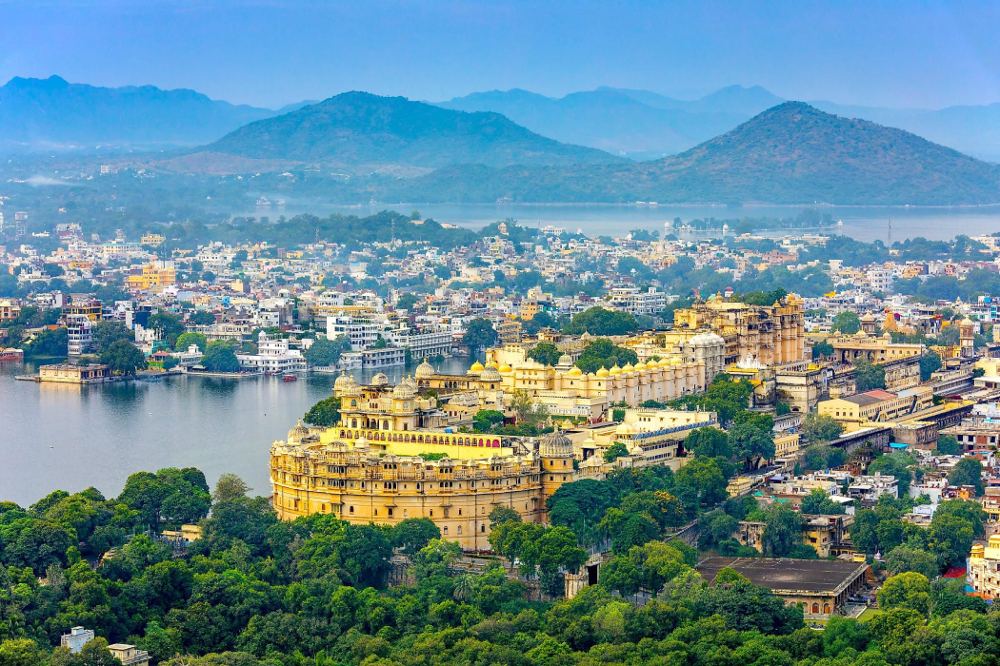
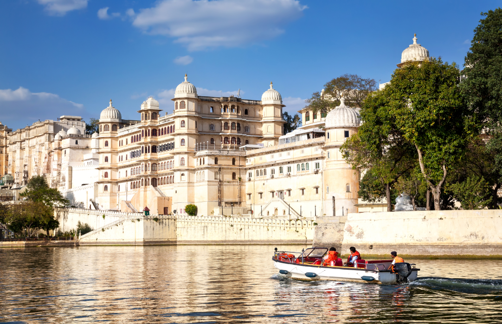
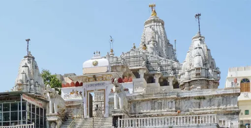
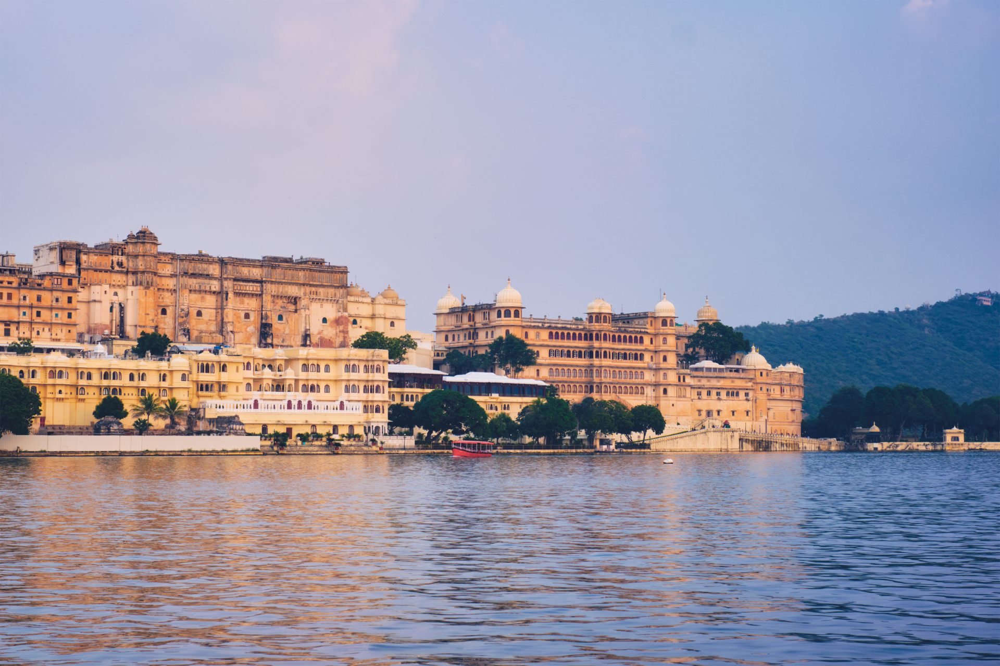
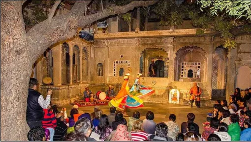
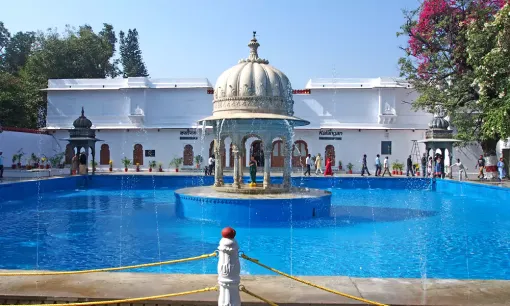
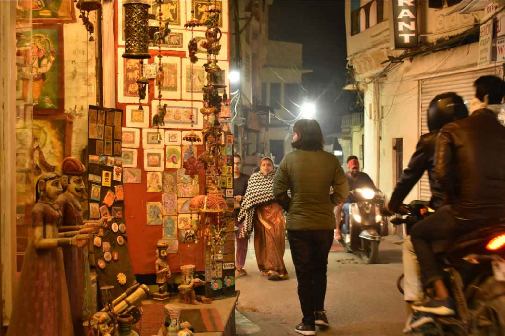
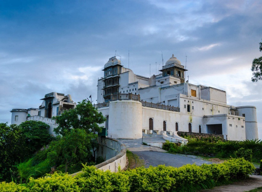
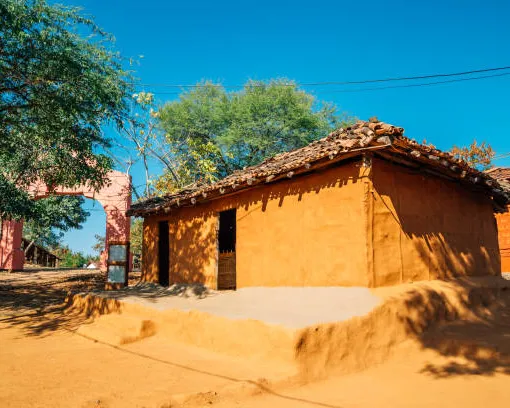

A Complete 3-Day Udaipur Travel Plan
for Families & Couples
Few cities in India blend romance, culture, history, and natural beauty as effortlessly as Udaipur. Surrounded by the Aravalli Hills and adorned with shimmering lakes, the City of Lakes offers experiences that appeal equally to families and couples.

Days
Why 3 Days is Perfect for Udaipur
Many visitors spend only one or two days in Udaipur, but a three-day itinerary provides a more complete experience. Three days is the ideal amount of time to explore Udaipur without rushing.
With three days, you can visit major attractions comfortably, enjoy lakes and scenic viewpoints, explore local markets, experience Rajasthan's culture, include leisure time, and discover hidden corners of the city. This balance makes the trip enjoyable for both families and couples.
Your Day-by-Day Udaipur Plan
Whether you're traveling with children, parents, or your partner, this 3-day Udaipur travel plan will help you experience the best the city has to offer.

Morning — Explore Royal Heritage
City Palace
Begin your journey at City Palace, the city's most iconic attraction. Overlooking Lake Pichola, the palace showcases centuries of Mewar history.
- Courtyards, museums and royal chambers
- Decorative balconies and historic architecture
- Children enjoy the maze-like corridors and Rajasthan's royal history
- Stunning viewpoints and countless photo opportunities for couples
- Recommended Time: 2–3 hours

Mid-Morning — Spiritual Stop
Jagdish Temple
Just outside City Palace is Jagdish Temple. This 17th-century temple is known for its intricate carvings and spiritual atmosphere.
- Intricate stone carvings
- Peaceful spiritual atmosphere

Afternoon — Explore the Old City
Old City Lanes
The historic lanes surrounding City Palace are filled with artisan workshops, heritage havelis, local cafés, handicraft stores, and hidden temples.
- Artisan workshops and heritage havelis
- Local cafés and handicraft stores
- Hidden temples
- Families can enjoy browsing local markets; couples appreciate the charm of quieter streets

Evening — Sunset on the Water
Sunset Boat Ride on Lake Pichola
A boat ride on Lake Pichola is one of the most memorable experiences in Udaipur. The ride offers beautiful views of Lake Palace, Jag Mandir, City Palace, and historic ghats.
- Children enjoy seeing the city from the water
- The sunset atmosphere makes it one of the most romantic experiences in Rajasthan

Night — Cultural Performance
Cultural Show at Bagore Ki Haveli
End the day at Bagore Ki Haveli. The evening performance is both entertaining and educational for all age groups.
- Folk dances and puppet shows
- Traditional music
- Cultural storytelling

Morning — Lakes & Gardens
Walk Around Fateh Sagar Lake
Start the day at Fateh Sagar Lake. The peaceful surroundings make it ideal for morning walks, family outings, photography, and relaxation. The views of the Aravalli Hills add to the experience.
- Morning walks and photography
- Panoramic views of the Aravalli Hills
- Ideal for families and relaxed starts to the day

Mid-Morning — Royal Gardens
Saheliyon Ki Bari
Saheliyon Ki Bari is one of Udaipur's most elegant gardens. Families appreciate the open spaces, while couples enjoy the tranquil atmosphere.
- Lotus pools and marble fountains
- Decorative pavilions and landscaped gardens

Afternoon — Shopping & Culture
Discover Local Markets
Shopping is an important part of the Udaipur experience. The city's popular markets offer a wide range of traditional crafts and souvenirs.
- Hathipole Bazaar — miniature paintings, textiles, and traditional crafts
- Bapu Bazaar — souvenirs, clothing, and handmade products

Evening — Rooftop Dining
Rooftop Dining Experience
Udaipur is famous for rooftop restaurants overlooking the lakes. A leisurely dinner with views of illuminated palaces and calm waters is a wonderful way to end the day.
- Views of illuminated palaces at night
- Calm lake reflections

Morning — Scenic Views
Sajjangarh Monsoon Palace
Perched above the city, Sajjangarh Monsoon Palace offers panoramic views of Lake Pichola, Fateh Sagar Lake, the Aravalli Hills, and the Udaipur skyline. The drive itself is scenic and enjoyable.
- Panoramic views of Lake Pichola and Fateh Sagar Lake
- Sweeping views of the Aravalli Hills and Udaipur skyline
- Scenic drive to the palace

Mid-Day — Cultural Village
Shilpgram
Shilpgram showcases Rajasthan's traditional arts, crafts, and rural culture. Families often find it educational, while couples appreciate the cultural immersion.
- Artisan workshops and folk performances
- Traditional architecture and cultural exhibits

Afternoon — Authentic Flavours
Enjoy Local Cuisine
Take time to sample authentic Rajasthani dishes. Food is one of the best ways to connect with local culture.
- Dal Baati Churma
- Gatte Ki Sabzi
- Ker Sangri
- Laal Maas
Evening — Unwind
Relax and Reflect
Spend your final evening exploring the city at a slower pace. Often, these unplanned moments become the most memorable part of the journey.
- Lakeside walks and café hopping
- Shopping and photography
- Watching the sunset
Experiences for Families & Couples
Few destinations manage to balance family-friendly attractions with romantic experiences as effectively as Udaipur. The city offers historic landmarks, cultural activities, scenic lakes, a relaxed pace, heritage architecture, and local experiences.
This versatility makes it a destination that appeals to multiple generations and travel styles.
Boat Rides on Lake Pichola
Children enjoy seeing the city from the water, while the sunset atmosphere makes it one of the most romantic experiences in Rajasthan for couples.
Cultural Performances
Folk dances, puppet shows, and traditional music at Bagore Ki Haveli are both entertaining and educational for all age groups.
Garden Visits
Saheliyon Ki Bari's open spaces are perfect for families, while couples enjoy the tranquil and romantic atmosphere of the lotus pools and fountains.
Rooftop Dining
Udaipur is famous for rooftop restaurants overlooking the lakes — a wonderful romantic experience for couples visiting the city.
Monsoon Palace Sunsets
Panoramic views of Lake Pichola, the Aravalli Hills, and the Udaipur skyline from Sajjangarh make for an unforgettable sunset for couples.
Shilpgram & Vintage Car Museum
Shilpgram and the Vintage Car Museum are popular family-friendly experiences that are both educational and engaging for all ages.


The Right Hotel Enhances
Your Entire Experience
Choosing the right hotel in Udaipur can greatly influence your overall experience. Families often look for comfort, accessibility, and spacious accommodations, while couples may prioritize atmosphere and character. Heritage and boutique hotels in Udaipur provide a unique opportunity to experience the city's architectural heritage and hospitality traditions.
For travelers seeking a more intimate stay, Kaladwas Lal Haveli offers traditional Mewari architecture, personalized service, and a heritage-inspired environment that complements the city's royal charm.
Book Your Stay View Rooms
Plan Your Trip with Confidence
Everything you need to know before visiting Udaipur.